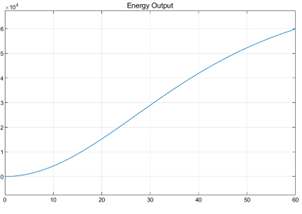
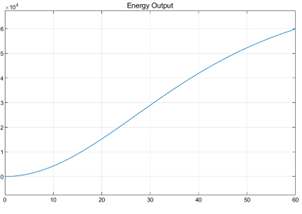

One-dimensional longitudinal vehicle and energy consumption model developed in MATLAB/Simulink.
This project presents the development of a physics-based, one-dimensional vehicle dynamics and energy consumption model for a Shell Eco-Marathon prototype vehicle. The simulation predicts velocity, position, cumulative energy usage, and fuel consumption based on applied driving force and resistive loads.
The model supports efficiency optimization, performance analysis, and early-stage design validation for ultra-low energy vehicles.
Simulation: MATLAB / Simulink
Modeling: Continuous-Time Dynamic Systems
Methods: Longitudinal Vehicle Dynamics, Energy Modeling
Full system documentation detailing model architecture, equations, assumptions, and implementation is available below.
📄 View V1 System Documentation (PDF)
The simulation is organized into four primary subsystems:
Driving force is combined with aerodynamic and rolling resistance to form the net longitudinal force. This force is integrated to compute velocity and position. Energy consumption is derived from mechanical power at the wheels.
 Top-level Simulink system architecture showing major subsystems.
Top-level Simulink system architecture showing major subsystems.
Longitudinal forces are computed using fundamental vehicle dynamics relationships. Aerodynamic drag and rolling resistance oppose forward motion and are continuously updated using vehicle velocity.
Aerodynamic drag:
Fdrag = ½ ρ Cd A v²
Rolling resistance:
Froll = m g Crr
Net force:
Fnet = Fengine − Fdrag − Froll
The vehicle is modeled as a lumped point mass moving in one dimension. Newton’s Second Law governs acceleration:
dv/dt = Fnet / m
Velocity is obtained by integrating acceleration, and position is computed by integrating velocity using continuous-time integrator blocks in Simulink.
Mechanical power at the wheels is computed from force and velocity:
P(t) = Fnet(t) · v(t)
Drivetrain efficiency is applied to account for losses, and cumulative energy is obtained by integrating effective power.
Fuel consumption is estimated using the fuel lower heating value (LHV).
The model produces time-history outputs for vehicle motion and energy usage. These signals are logged and visualized using Simulink scope blocks.
 Vehicle position as a function of time.
Vehicle position as a function of time.
 Vehicle velocity as a function of time.

Cumulative mechanical energy delivered to the wheels.
Vehicle velocity as a function of time.

Cumulative mechanical energy delivered to the wheels.
 Estimated fuel usage based on energy consumption.
Estimated fuel usage based on energy consumption.
The current implementation includes several simplifying assumptions:
These assumptions enable rapid simulation while maintaining physical interpretability.
Planned extensions include:
Future integration with CAD and CFD tools will allow improved parameter definition as the vehicle design matures.
This project demonstrates the development of a modular, physics-based vehicle simulation environment for energy efficiency analysis. The model provides a strong foundation for performance optimization and experimental validation in Shell Eco-Marathon competition settings.